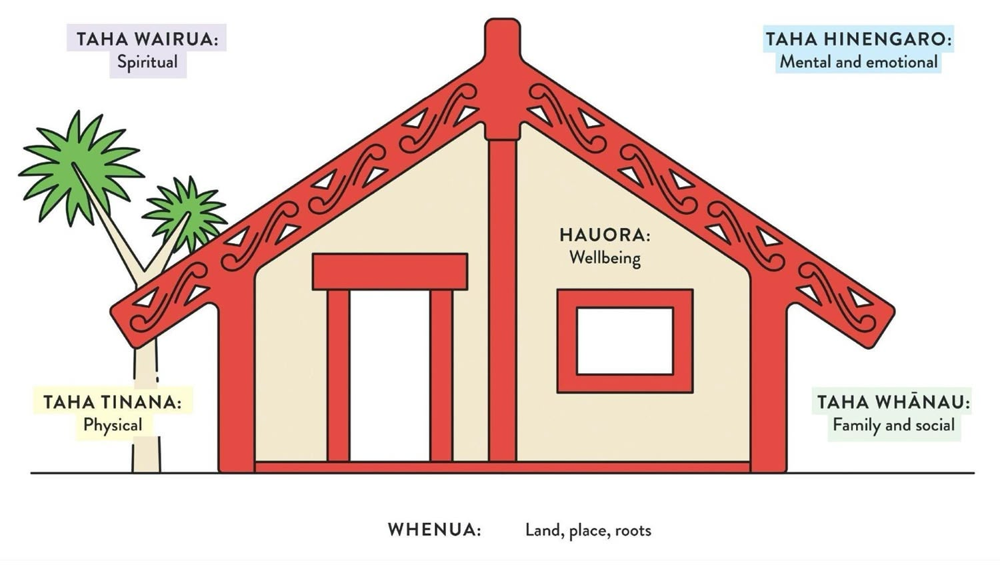

Te Whare Tapa Whā
September 2025
About
Te Whare Tapa Whā is a model of the 4 dimensions of wellbeing developed by Tā Mason Durie in 1984 to provide a Māori perspective on health.
The 4 dimensions are taha tinana (physical wellbeing), taha hinengaro (mental wellbeing), taha wairua (spiritual wellbeing), and taha whānau (family wellbeing). With 4 walls, the wharenui is a symbol of these 4 dimensions, while the whenua (land, sea, natural world) forms the foundation.
Figure 1: Te Whare Tapa Whā — a diagram of a wharenui with 5 labels: Taha wairua (Spiritual), Taha tinana (Physical), Taha hinengaro (Mental & Emotional), Taha whānau (Family & Social), and Whenua (Land, roots).
My Wellbeing Activities
| Wall/Taha | Activities |
|---|---|
| Taha Tinana (Physical Wellbeing) |
|
| Taha Whānau (Family Wellbeing) |
|
| Taha Hinengaro (Emotional & Mental Wellbeing) |
|
| Taha Wairua (Spiritual Wellbeing) |
|
| Whenua (Interconnections to the land & environment) |
|